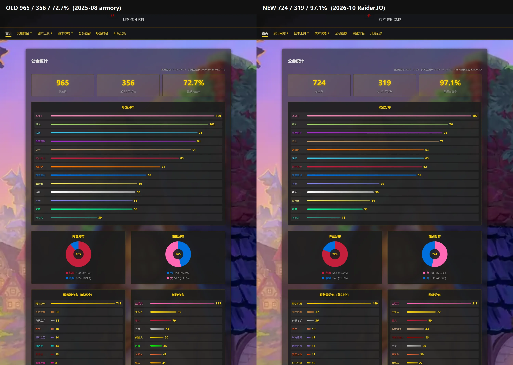
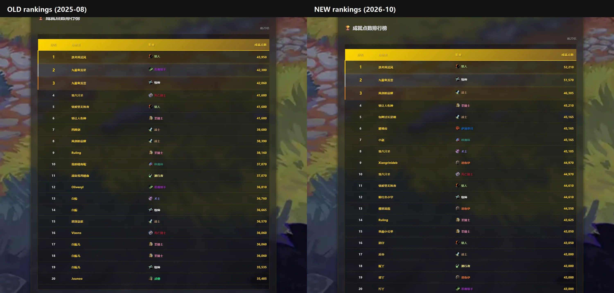
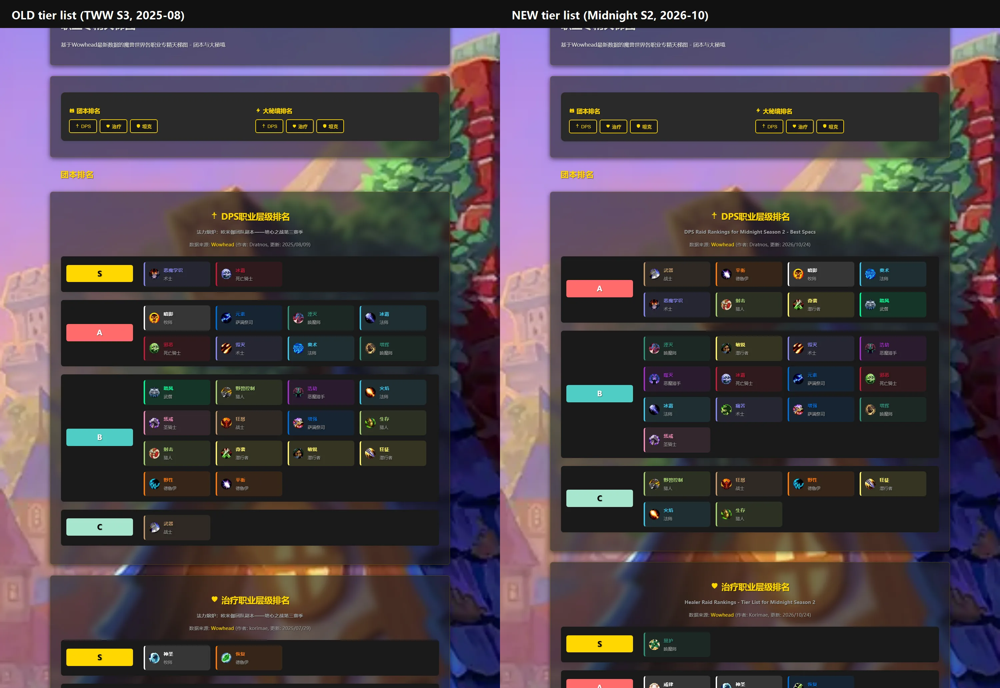
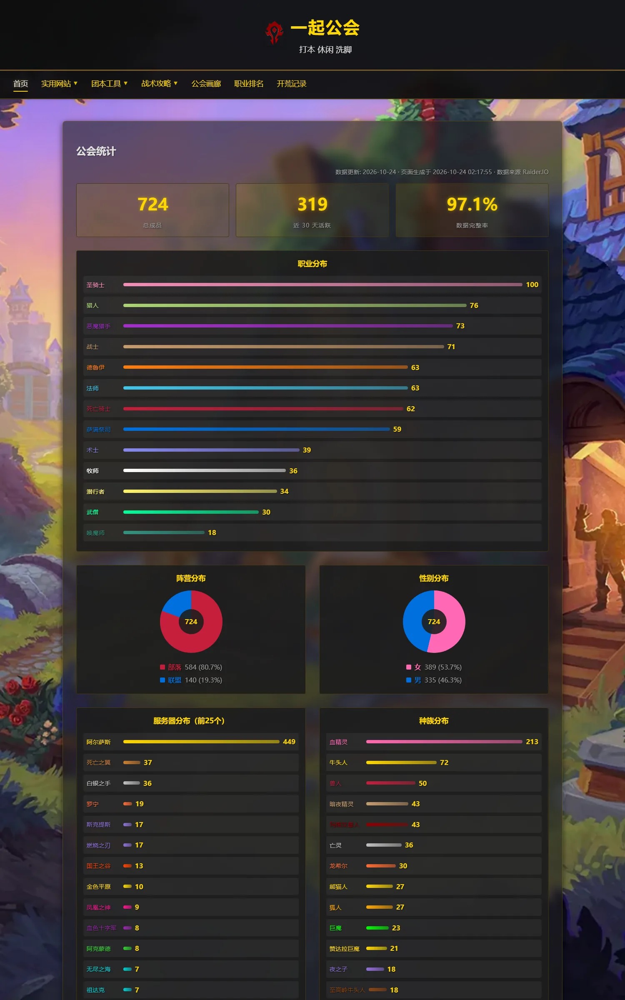
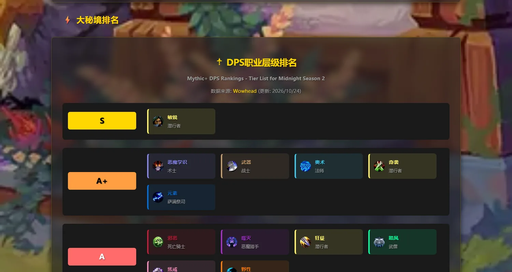
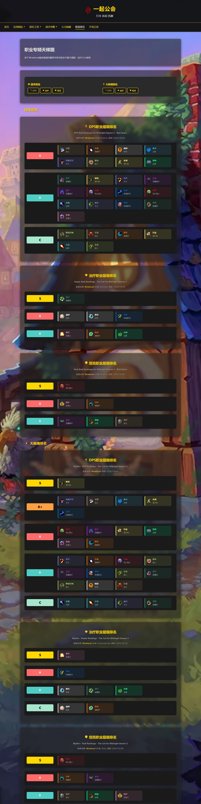

旧图 = HEAD 里的 page_data.json 与 6 份天梯数据（2025-08 英雄榜导出）；新图 = 2026-10 Raider.IO 数据。 截图均由无头 Edge 实际渲染，不是改图。

| 项 | 旧（2025-08 英雄榜） | 新（2026-10 Raider.IO） |
|---|---|---|
| 总成员 | 965 | 724 |
| 近 30 天活跃 | 356 | 319（其中本季有 M+ 77 人） |
| 数据完整率 | 72.7% | 97.1% |
| 阵营 | 部落 860 / 联盟 105 | 部落 584 / 联盟 140 |
| 性别 | 男 446 / 女 517 | 男 335 / 女 389 |
| 阿尔萨斯 | 719 | 449 |




